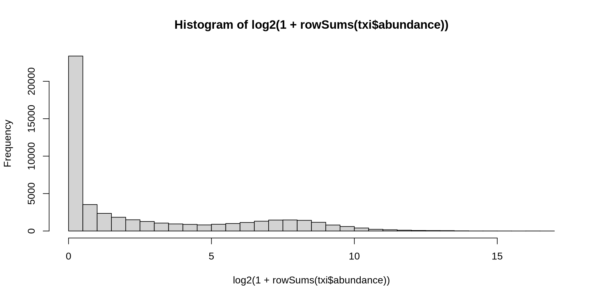
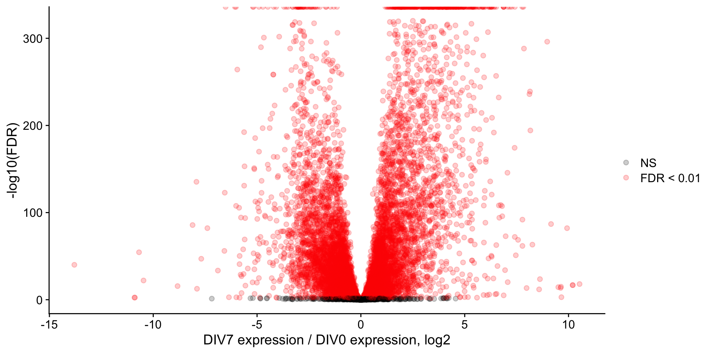
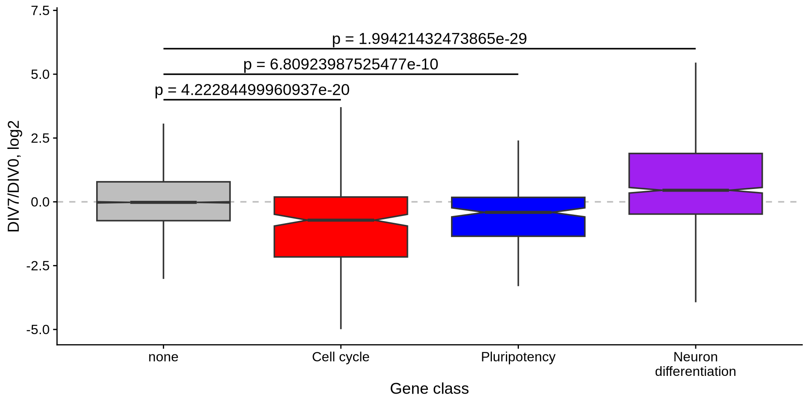
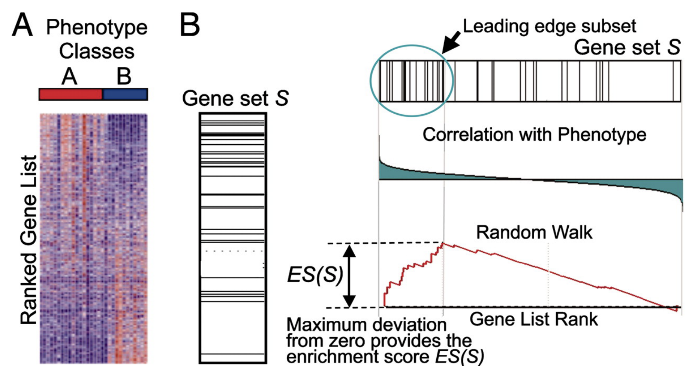
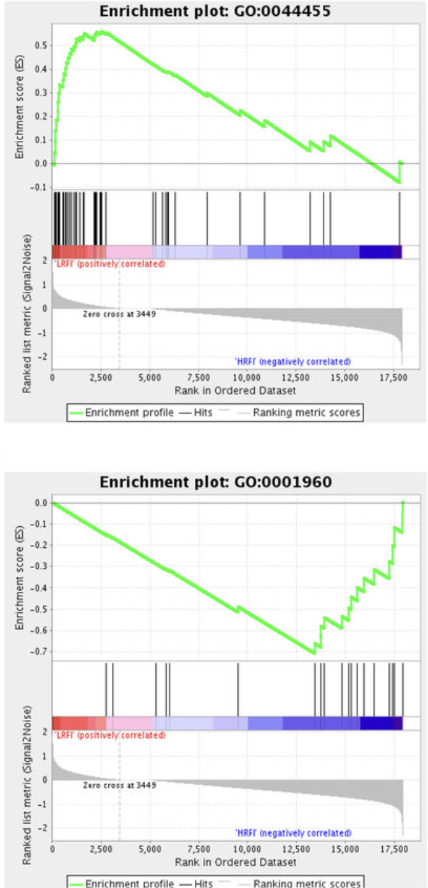

Last time we took RNAseq data from an in vitro differentiation timecourse from mouse ESCs to glutaminergic neurons (Hubbard et al, F1000 Research (2013)). We took in transcript-level quantifications produced by salmon and collapsed them to gene-level quantifications using tximport. We then inspected the quality of the data by relating distances between samples using two methods: hierarchical clustering and principal components analysis. We found that the data was of high quality, as evidenced by the fact that replicates from a given timepoint were highly similar to other replicates for the same timepoint, and the distances between samples made sense with what we know about how the experiment was conducted.
Today, we are going to pretend that this isn’t a timecourse. For the sake of simplicity, we are going to imagine that we have only two conditions: DIV0 and DIV7. We will use DESeq2 to identify genes that are differentially expressed between these two timepoints. We will then plot changes in expression for both individual genes and groups of genes that we already know going in might be interesting to look at. Finally, we will look at some features of transcripts and genes that are differentially expressed between these two timepoints.
Prepare t2g
The first thing we need to do is read in the data again and move from transcript-level expression values to gene-level expression values with tximport. Let’s use biomaRt to get a table that relates gene and transcript IDs.
mart <- biomaRt::useEnsembl("ENSEMBL_MART_ENSEMBL",host ='https://www.ensembl.org',dataset ="mmusculus_gene_ensembl")
Possible SSL connectivity problems detected.
Please report this issue at https://github.com/grimbough/biomaRt/issues
Error in req_perform(useast) : HTTP 502 Bad Gateway.
── Column specification ────────────────────────────────────
Delimiter: "\t"
chr (3): ensembl_transcript_id, ensembl_gene_id, externa...
ℹ Use `spec()` to retrieve the full column specification for this data.
ℹ Specify the column types or set `show_col_types = FALSE` to quiet this message.
# maps systematic to common gene namesgene_name_map <- t2g |> dplyr::select(-ensembl_transcript_id) |>unique()
Prepare metadata and import
Now we can read in the transcript-level data and collapse to gene-level data with tximport
# examine distribution of TPMshist(log2(1+rowSums(txi$abundance)), breaks =40)
# decide a cutoffkeepG <- txi$abundance[log2(1+rowSums(txi$abundance)) >4.5, ] |>rownames()

Create DESeq object
There are essentially two steps to using DESeq2. The first involves creating a DESeqDataSet from your data. Luckily, if you have a tximport object, which we do in the form of txi, then this becomes easy.
Warning in DESeqDataSet(se, design = design, ignoreRank):
some variables in design formula are characters, converting
to factors
using just counts from tximport
# keep genes with sufficient expessionddsTxi <- ddsTxi[keepG, ]
Design formula
You can see that DESeqDataSetFromTximport wants three things. The first is our tximport object. The second is the dataframe we made that relates samples and conditions (or in this case timepoints). The last is something called a design formula. A design formula contains all of the variables that will go into DESeq2’s model. The formula starts with a tilde and then has variables separated by a plus sign think lm(). It is common practice, and in fact basically required with DESeq2, to put the variable of interest last. In our case, that’s trivial because we only have one: timepoint. So our design formula is very simple:
design =~ timepoint
Your design formula should ideally include all of the sources of variation in your data. For example, let’s say that here we thought there was a batch effect with the replicates. Maybe all of the Rep1 samples were prepped and sequenced on a different day than the Rep2 samples and so on. We could potentially account for this in DESeq2’s model with the following forumula:
design =~ rep + timepoint
Here, timepoint is still the variable of interest, but we are controlling for differences that arise due to differences in replicates.
Run DESeq2
We can see here that DESeq2 is taking the counts produced by tximport for gene quantifications. There are 52346 genes (rows) here and 7 samples (columns). Now using this ddsTxi object, we can run DESeq2.
# create DESeq objectdds <-DESeq(ddsTxi)
estimating size factors
estimating dispersions
gene-wise dispersion estimates
mean-dispersion relationship
final dispersion estimates
fitting model and testing
There are many useful things in this dds object. Take a look at the vignette for a full explanation. Including info on many more tests and analyses that can be done with DESeq2.
The results can be accessed using the results() function. We will use the contrast argument here. DESeq2 reports changes in RNA abundance between two samples as a log2FoldChange. But, it’s often not clear what the numerator and denominator of that fold change ratio…it could be either DIV7/DIV0 or DIV0/DIV7.
The lexographically first condition will be the numerator. I find it easier to explicitly specify what the numerator and denominator of this ratio are using the contrast argument. The contrast argument can be used to implement more complicated design formula. Remember our design formula that accounted for potential differences due to Replicate batch effects:
~ replicate + timepoint
DESeq2 will account for differences between replicates here to find differences between timepoints.
Contrasts to get results
# For contrast, we give three strings: the factor we are interested in, the numerator, and the denominatorresults(dds, contrast =c("timepoint", "DIV7", "DIV0"))
The columns we are most interested in are log2FoldChange and padj.
log2FoldChange is self-explanatory. padj is the Benjamini-Hochberg corrected pvalue for a test asking if the expression of this gene is different between the two conditions.
Cleanup results
Let’s do a little work on this data frame to make it slightly cleaner and more informative.
diff <-results( dds,contrast =c("timepoint", "DIV7", "DIV0") ) |># Change this into a dataframeas.data.frame() |># Move ensembl gene IDs into their own columnrownames_to_column(var ="ensembl_gene_id") |>as_tibble() |># drop unused columns dplyr::select(-c(baseMean, lfcSE, stat, pvalue)) |># Merge this with a table relating ensembl_gene_id with gene short namesinner_join(gene_name_map) |># Rename external_gene_name column dplyr::rename(gene = external_gene_name)
Joining with `by = join_by(ensembl_gene_id)`
How many are significant
OK now we have a table of gene expression results. How many genes are significantly up/down regulated between these two timepoints? We will use 0.01 as an FDR (p.adj) cutoff.
# number of upregulated genesnrow(filter(diff, padj <0.01& log2FoldChange >0))
[1] 5301
# number of downregulated genesnrow(filter(diff, padj <0.01& log2FoldChange <0))
[1] 5333
Volcano plot of differential expression results
Let’s make a volcano plot of these results.
# meets the FDR cutoffdiff_sig <-mutate( diff,sig =case_when( padj <0.01~"yes",.default ="no" ) ) |># if a gene did not meet expression cutoffs that DESeq2 automatically does, it gets a pvalue of NAdrop_na()ggplot( diff_sig,aes(x = log2FoldChange,y =-log10(padj),color = sig )) +geom_point(alpha =0.2) +labs(x ="DIV7 expression / DIV0 expression, log2",y ="-log10(FDR)" ) +scale_color_manual(values =c("black", "red"),labels =c("NS", "FDR < 0.01"),name ="" ) +theme_cowplot()
Volcano plot of differential expression results

Change the LFC threshold
In addition to an FDR cutoff, let’s also apply a log2FoldChange cutoff. This will of course be more conservative, but will probably give you a more confident set of genes.
# Is the expression of the gene at least 3-fold different?diff_lfc <-results( dds,contrast =c("timepoint", "DIV7", "DIV0"),lfcThreshold =log(3, 2) ) |># Change this into a dataframeas.data.frame() |># Move ensembl gene IDs into their own columnrownames_to_column(var ="ensembl_gene_id") |>as_tibble() |># drop unused columnsselect(-c(baseMean, lfcSE, stat, pvalue)) |># Merge this with a table relating ensembl_gene_id with gene short namesinner_join(gene_name_map) |># Rename external_gene_name column dplyr::rename(gene = external_gene_name)
Joining with `by = join_by(ensembl_gene_id)`
# number of upregulated genesnrow(filter( diff_lfc, padj <0.01& log2FoldChange >0 ))
[1] 1511
# number of downregulated genesnrow(filter( diff_lfc, padj <0.01& log2FoldChange <0 ))
[1] 990
Change the LFC threshold
diff_lfc_sig <-mutate( diff_lfc,sig =case_when( padj <0.01~"yes",.default ="no" ) ) |>drop_na()# look at some specific genesdiff_lfc_sig |>filter( gene %in%c("Bdnf", "Dlg4", "Klf4", "Sox2") ) |>gt()
Sometimes we will have particular marker genes that we might want to highlight to give confidence that the experiment worked as expected. We can plot the expression of these genes in each replicate. Let’s plot the expression of two pluripotency genes (which we expect to decrease) and two neuronal genes (which we expect to increase).
So what is the value that we would plot? We could use the ‘normalized counts’ value provided by DESeq2. However, remember there is not length calculation so it is difficult to compare accross genes.
A more interpretable value to plot might be TPM, since TPM is length-normalized. Let’s say a gene was expressed at 500 TPM. Right off the bat, I know generally what kind of expression that reflects (pretty high).
Get TPMs
Let’s plot the expression of Klf4, Sox2, Bdnf, and Dlg4 in our samples.
Say that instead of plotting individual genes we wanted to ask whether a whole class of genes are going up or down. We can do that by retrieving all genes that belong to a particular gene ontology term.
There are three classes of genes we will look at here:
Maintenance of pluripotency (GO:0019827)
Positive regulation of the cell cycle (GO:0045787)
Neuronal differentitaion (GO:0030182)
Retrieve pathway information
We can use biomaRt to get all genes that belong to each of these categories. Think of it like doing a gene ontology enrichment analysis in reverse.
You can see that these items are one-column dataframes that have the column name ‘ensembl_gene_id’. We can now go through our results dataframe and add an annotation column that marks whether the gene is in any of these categories.
OK we’ve got our table, now we are going to ask if the log2FoldChange values for the genes in each of these classes are different that what we would expect. So what is the expected value? Well, we have a distribution of log2 fold changes for all the genes that are not in any of these categories. So we will ask if the distribution of log2 fold changes for each gene category is different than that null distribution.
ggplot( diff_paths,aes(x = annot,y = log2FoldChange,fill = annot )) +labs(x ="Gene class",y ="DIV7/DIV0, log2" ) +geom_hline(yintercept =0,color ="gray",linetype ="dashed" ) +geom_boxplot(notch =TRUE,outlier.shape =NA ) +theme_cowplot() +scale_fill_manual(values =c("gray", "red", "blue", "purple"), guide = F) +scale_x_discrete(labels =c("none","Cell cycle","Pluripotency","Neuron\ndifferentiation" ) ) +ylim(-5, 7) +# hacky significance barsannotate("segment", x =1, xend =2, y =4, yend =4) +annotate("segment", x =1, xend =3, y =5, yend =5) +annotate("segment", x =1, xend =4, y =6, yend =6) +annotate("text", x =1.5, y =4.4, label =paste0("p = ", p.cellcycle)) +annotate("text", x =2, y =5.4, label =paste0("p = ", p.pluripotency)) +annotate("text", x =2.5, y =6.4, label =paste0("p = ", p.neurondiff))
plot pathway differences

What if we want to look at pathways in an unbiased way?
We will use Gene Set Enrichment Analysis (GSEA) to determine if pre-defined gene sets (pathways, GO terms, experimentally defined genes) are coordinately up-regulated or down-regulated between the two conditions you are comparing. To run gsea you need 2 things. 1. You list of expressed genes ranked by fold change. 2. Pre-defined gene sets. See MSigDb

PMID: 12808457, 16199517
GSEA examples
Top = upregulated

Bottom = downregulated
Prep GSEA
We need to make a list of all genes and their LFC.
We need to find interesting gene sets.
Run GSEA
# retrieve hallmark gene sets from msigdbmouse_hallmark <-msigdbr(species ="Mus musculus") |>filter(gs_collection =="H") |># "H" is hallmarkselect(gs_name, gene_symbol)
Prep GSEA
Using human MSigDB with ortholog mapping to mouse. Use `db_species = "MM"` for mouse-native gene sets.
Downloading gene sets (first use only, may take a few minutes)...
This message is displayed once per session.
# create a list of gene LFCsrankedgenes <- diff_lfc |>pull(log2FoldChange)# add symbols as names of the listnames(rankedgenes) <- diff$gene# sort by LFCrankedgenes <-sort(rankedgenes, decreasing =TRUE)# deduplicaterankedgenes <- rankedgenes[!duplicated(names(rankedgenes))]